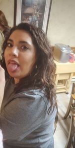
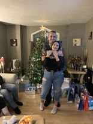
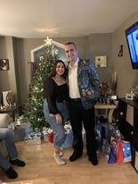
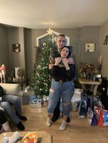
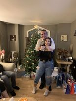

We have known eachother for only just over 2 months, and in that short time we've grown closer and closer. Starting with our friend Teagan telling me she has the perfect girl for me, and the moment I saw you I knew she was right. Apparently she only mentioned I was good for a fun time, but thats ok. From day one I knew you were the girl for me, but I knew for you to like me, it was gonna take some convincing. I tried and tried to find a way to talk to you, even had Taran invite me over when he knew you guys were there just so I could see you, but not wanting to disturb you guys from school work my attempts were short lived. Then one night we both happened to be drinking at teagans together I finally got my chance and was able to get your snap. After that we talked everyday, me trying to flirt with you and you shooting me down everychance you got. then finally one fateful night, after your second attempt to friendzone me, you gave me the chance and started to see me in a different light.
We then started talking more and more each day, and even met eachothers families. We soon started to see where this was heading, after spending christmas at your parents and new years at John's nonas there really was no more denying it. But becuase of the shitshow that was the year we met you didn't want me asking you out in that year and rightfully so, now that we have survived that horrible year I want to start this next year right with the person that made my last year amazing despite her only being in my year for a short amount of time. You make me happy everyday and I smile everytime I see a message from you. Despite our littel fights here and there we always are quick to apologize, usually me apologizing becuase I'm usually the one who messed up, but we always are ok by the end of the day or the start of the next. You make me a better man and happy everyday and nothing will make me happier than you saying yes to the question I have for you.
   